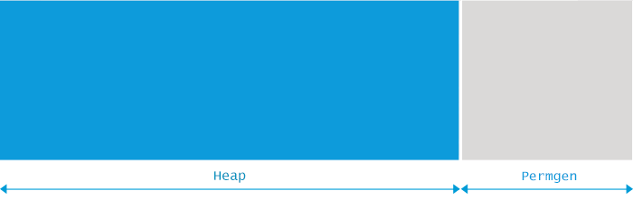

转载自: https://blog.csdn.net/renfufei/article/details/76350794
每个Java程序都只能使用一定量的内存, 这种限制是由JVM的启动参数决定的。而更复杂的情况在于, Java程序的内存分为两部分: 堆内存(Heap space)和 永久代(Permanent Generation, 简称 Permgen):

这两个区域的最大内存大小, 由JVM启动参数 -Xmx 和 -XX:MaxPermSize 指定. 如果没有明确指定, 则根据平台类型(OS版本+ JVM版本)和物理内存的大小来确定。
假如在创建新的对象时, 堆内存中的空间不足以存放新创建的对象, 就会引发java.lang.OutOfMemoryError: Java heap space 错误。
不管机器上还没有空闲的物理内存, 只要堆内存使用量达到最大内存限制,就会抛出 java.lang.OutOfMemoryError: Java heap space 错误。
原因分析
产生 java.lang.OutOfMemoryError: Java heap space 错误的原因, 很多时候, 就类似于将 XXL 号的对象,往 S 号的 Java heap space 里面塞。其实清楚了原因, 就很容易解决对不对? 只要增加堆内存的大小, 程序就能正常运行. 另外还有一些比较复杂的情况, 主要是由代码问题导致的:
- 超出预期的访问量/数据量。 应用系统设计时,一般是有 “容量” 定义的, 部署这么多机器, 用来处理一定量的数据/业务。 如果访问量突然飙升, 超过预期的阈值, 类似于时间坐标系中针尖形状的图谱, 那么在峰值所在的时间段, 程序很可能就会卡死、并触发 java.lang.OutOfMemoryError: Java heap space 错误。
- 内存泄露(Memory leak). 这也是一种经常出现的情形。由于代码中的某些错误, 导致系统占用的内存越来越多. 如果某个方法/某段代码存在内存泄漏的, 每执行一次, 就会（有更多的垃圾对象）占用更多的内存. 随着运行时间的推移, 泄漏的对象耗光了堆中的所有内存, 那么 java.lang.OutOfMemoryError: Java heap space 错误就爆发了。
具体示例
一个非常简单的示例
以下代码非常简单, 程序试图分配容量为 2M 的 int 数组. 如果指定启动参数 -Xmx12m, 那么就会发生 java.lang.OutOfMemoryError: Java heap space 错误。而只要将参数稍微修改一下, 变成 -Xmx13m, 错误就不再发生。
1 | public class OOM { |
内存泄漏示例
这个示例更真实一些。在Java中, 创建一个新对象时, 例如 Integer num = new Integer(5); , 并不需要手动分配内存。因为 JVM 自动封装并处理了内存分配. 在程序执行过程中, JVM 会在必要时检查内存中还有哪些对象仍在使用, 而不再使用的那些对象则会被丢弃, 并将其占用的内存回收和重用。这个过程称为 垃圾收集. JVM中负责垃圾回收的模块叫做 垃圾收集器(GC)。
Java的自动内存管理依赖 GC, GC会一遍又一遍地扫描内存区域, 将不使用的对象删除. 简单来说, Java中的内存泄漏, 就是那些逻辑上不再使用的对象, 却没有被 垃圾收集程序 给干掉. 从而导致垃圾对象继续占用堆内存中, 逐渐堆积, 最后造成 java.lang.OutOfMemoryError: Java heap space 错误。
很容易写个BUG程序, 来模拟内存泄漏:
1 | import java.util.*; |
粗略一看, 可能觉得没什么问题, 因为这最多缓存 10000 个元素嘛! 但仔细审查就会发现, Key 这个类只重写了 hashCode() 方法, 却没有重写 equals() 方法, 于是就会一直往 HashMap 中添加更多的 Key。
随着时间推移, “cached” 的对象会越来越多. 当泄漏的对象占满了所有的堆内存, GC 又清理不了, 就会抛出 java.lang.OutOfMemoryError:Java heap space 错误。
解决办法很简单, 在 Key 类中恰当地实现 equals() 方法即可：
1 | @Override |
说实话, 在寻找真正的内存泄漏原因时, 你可能会死掉很多很多的脑细胞。
一个SpringMVC中的场景
译者曾经碰到过这样一种场景:
为了轻易地兼容从 Struts2 迁移到 SpringMVC 的代码, 在 Controller 中直接获取 request.
所以在 ControllerBase 类中通过 ThreadLocal 缓存了当前线程所持有的 request 对象:
1 | public abstract class ControllerBase { |
然后在 SpringMVC的拦截器(Interceptor)实现类中, 在 preHandle 方法里, 将 request 对象保存到 ThreadLocal 中:
1 | /** |
在 postHandle 和 afterCompletion 方法中, 清理 ThreadLocal 中的 request 对象。
但在实际使用过程中, 业务开发人员将一个很大的对象（如占用内存200MB左右的List）设置为 request 的 Attributes， 传递到 JSP 中。
JSP代码中可能发生了异常, 则SpringMVC的postHandle 和 afterCompletion 方法不会被执行。
Tomcat 中的线程调度, 可能会一直调度不到那个抛出了异常的线程, 于是 ThreadLocal 一直 hold 住 request。 随着运行时间的推移,把可用内存占满, 一直在执行 Full GC, 系统直接卡死。
后续的修正: 通过 Filter, 在 finally 语句块中清理 ThreadLocal。
1 | @WebFilter(value="/*", asyncSupported=true) |
教训是：可以使用 ThreadLocal, 但必须有受控制的释放措施、一般就是 try-finally 的代码形式。
说明: SpringMVC 的 Controller 中, 其实可以通过
@Autowired注入 request, 实际注入的是一个HttpServletRequestWrapper对象, 执行时也是通过 ThreadLocal 机制调用当前的 request。常规方式: 直接在controller方法中接收 request 参数即可。
解决方案
如果设置的最大内存不满足程序的正常运行, 只需要增大堆内存即可, 配置参数可以参考下文。
但很多情况下, 增加堆内存空间并不能解决问题。比如存在内存泄漏, 增加堆内存只会推迟 java.lang.OutOfMemoryError: Java heap space 错误的触发时间。
当然, 增大堆内存, 可能会增加 GC pauses 的时间, 从而影响程序的 吞吐量或延迟。
要从根本上解决问题, 则需要排查分配内存的代码. 简单来说, 需要解决这些问题:
- 哪类对象占用了最多内存？
- 这些对象是在哪部分代码中分配的。
要搞清这一点, 可能需要好几天时间。下面是大致的流程:
- 获得在生产服务器上执行堆转储(heap dump)的权限。“转储”(Dump)是堆内存的快照, 稍后可以用于内存分析. 这些快照中可能含有机密信息, 例如密码、信用卡账号等, 所以有时候, 由于企业的安全限制, 要获得生产环境的堆转储并不容易。
- 在适当的时间执行堆转储。一般来说,内存分析需要比对多个堆转储文件, 假如获取的时机不对, 那就可能是一个“废”的快照. 另外, 每次执行堆转储, 都会对JVM进行“冻结”, 所以生产环境中,也不能执行太多的Dump操作,否则系统缓慢或者卡死,你的麻烦就大了。
- 用另一台机器来加载Dump文件。一般来说, 如果出问题的JVM内存是8GB, 那么分析 Heap Dump 的机器内存需要大于 8GB. 打开转储分析软件(我们推荐Eclipse MAT , 当然你也可以使用其他工具)。
- 检测快照中占用内存最大的 GC roots。详情请参考: Solving OutOfMemoryError (part 6) – Dump is not a waste。 这对新手来说可能有点困难, 但这也会加深你对堆内存结构以及navigation机制的理解。
- 接下来, 找出可能会分配大量对象的代码. 如果对整个系统非常熟悉, 可能很快就能定位了。
打个广告, 我们推荐 Plumbr, the only Java monitoring solution with automatic root cause detection。 Plumbr 能捕获所有的 java.lang.OutOfMemoryError , 并找出其他的性能问题, 例如最消耗内存的数据结构等等。
Plumbr 在后台负责收集数据 —— 包括堆内存使用情况(只统计对象分布图, 不涉及实际数据),以及在堆转储中不容易发现的各种问题。 如果发生 java.lang.OutOfMemoryError , 还能在不停机的情况下, 做必要的数据处理. 下面是Plumbr 对一个 java.lang.OutOfMemoryError 的提醒:

强大吧, 不需要其他工具和分析, 就能直接看到:
- 哪类对象占用了最多的内存(此处是 271 个 com.example.map.impl.PartitionContainer 实例, 消耗了 173MB 内存, 而堆内存只有 248MB)
- 这些对象在何处创建(大部分是在 MetricManagerImpl 类中,第304行处)
- 当前是谁在引用这些对象(从 GC root 开始的完整引用链)
得知这些信息, 就可以定位到问题的根源, 例如是当地精简数据结构/模型, 只占用必要的内存即可。
当然, 根据内存分析的结果, 以及Plumbr生成的报告, 如果发现对象占用的内存很合理, 也不需要修改源代码的话, 那就增大堆内存吧。在这种情况下,修改JVM启动参数, (按比例)增加下面的值:
1 | -Xmx1024m |
这里配置Java堆内存最大为 1024MB。可以使用 g/G 表示 GB, m/M 代表 MB, k/K 表示 KB.
下面的这些形式都是等价的, 设置Java堆的最大空间为 1GB:
1 | # 等价形式: 最大1GB内存 |